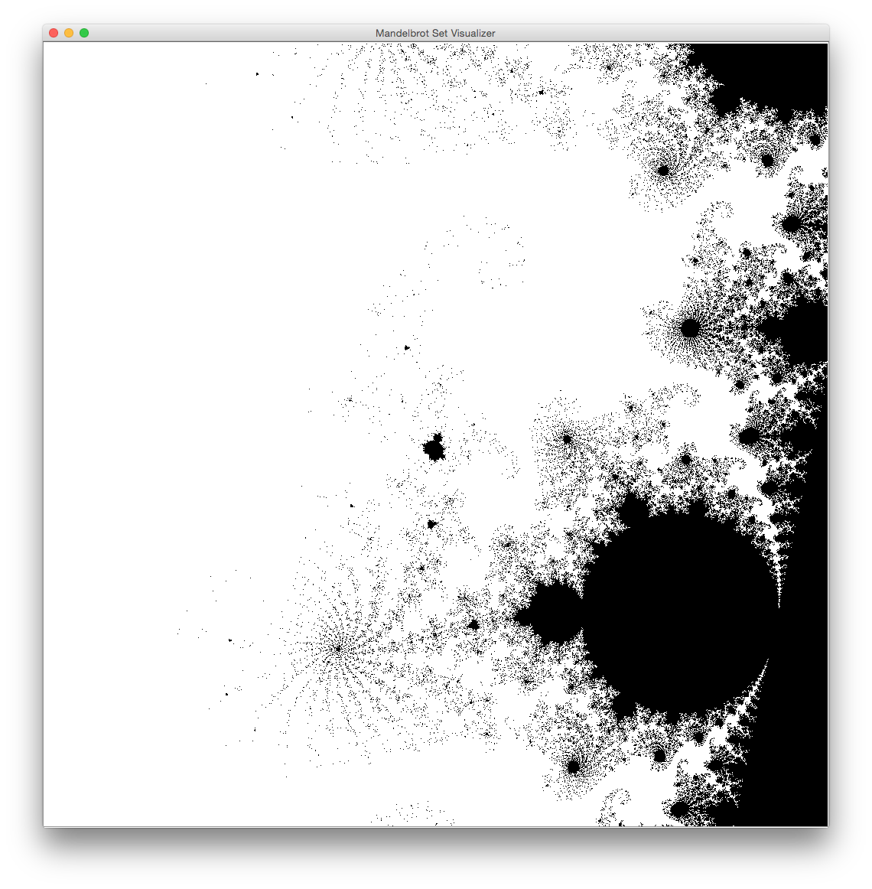
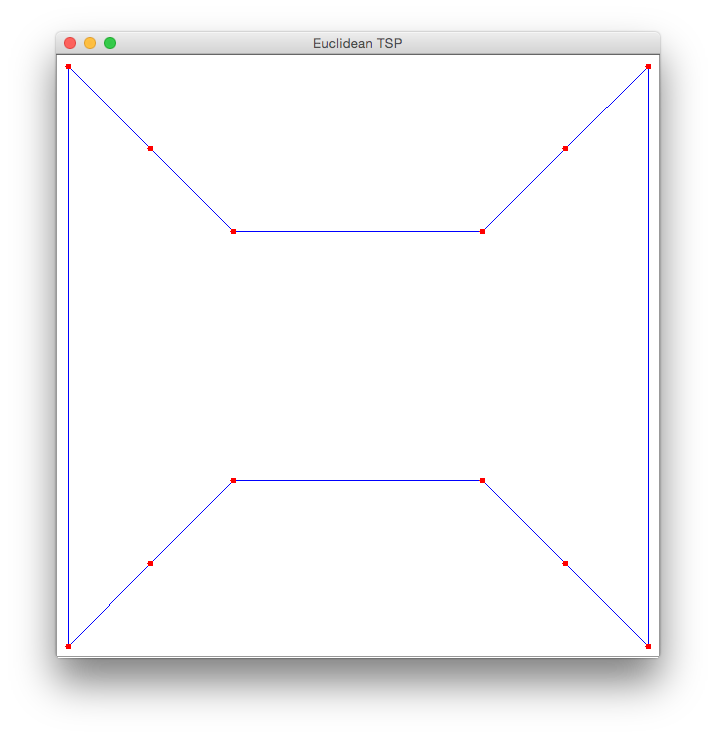

Test
Assignment 2: A Basic Compute Farm
Purpose
- Expand your experience working with Java RMI
- Begin to build a Java-centric cluster computing infrastructure.
- Build limited fault tolerance into your infrastructure.
- Introduce thread-safety.
- Use the Replicated Worker design pattern.
- Use the Remote Proxy design pattern.
- Use a Producer-Consumer design pattern.
Motivation
Each large Internet computing project, such as SETI@HOME, tackles some problem that has a simple parallel decomposition. We call such "embarrassingly parallel" problems piecework-parallel, indicating that a problem in this class has a piecework decomposition: The problem decomposes into objects that implement Task, and whose execute methods return values that can be composed into a solution to the original problem.
Specification
In this assignment, you build a basic compute farm infrastrure for hosting piecework-parallel problems. The client decomposes the problem, constructing a set of Task objects. These tasks are passed to a Space, which makes them available to compute servers which function much like those in your first assignment. The results computed by Computers are returned to the Space. The client retrieves results from the Space, composing them into a solution to the original problem.
The API
Task
package api; import java.io.Serializable; import java.util.concurrent.Callable; /** * * @author Peter Cappello * @param <V> the task return type. */ public interface Task<V> extends Serializable, Callable<V> { @Override V call(); }
An immutable Result container
Result class has:
- a task execute method's return value.
- the elapsed time of the task execute method, as seen by the computer that executes it: The code for obtaining this time is not a part of the implementation of Task's execute method; it is part the Computer execute method.
package api; import java.io.Serializable; /** * * @author Peter Cappello * @param <T> type of return value of corresponding Task. */ public class Result<T> implements Serializable { private final T taskReturnValue; private final long taskRunTime; public Result( T taskReturnValue, long taskRunTime ) { assert taskReturnValue != null; assert taskRunTime >= 0; this.taskReturnValue = taskReturnValue; this.taskRunTime = taskRunTime; } public T getTaskReturnValue() { return taskReturnValue; } public long getTaskRunTime() { return taskRunTime; } @Override public String toString() { StringBuilder stringBuilder = new StringBuilder(); stringBuilder.append( getClass() ); stringBuilder.append( "\n\tExecution time:\n\t" ).append( taskRunTime ); stringBuilder.append( "\n\tReturn value:\n\t" ).append( taskReturnValue.toString() ); return stringBuilder.toString(); } }
The Computer interface
The Computer interface is not part of the API; the client interacts with the Space, which interacts with Computers as its backend.
The Space interface
package api; import java.rmi.Remote; import java.rmi.RemoteException; import java.util.List; import system.Computer; /** * * @author Peter Cappello */ public interface Space extends Remote { public static int PORT = 8001; public static String SERVICE_NAME = "Space"; void putAll ( List<Task> taskList ) throws RemoteException; Result take() throws RemoteException; void register( Computer computer ) throws RemoteException; }
The client is responsible for decomposing the problem into a set of Task objects, and passing them to the Space via the putAll method. In principle, these task objects can be processed in parallel by Computers.
(Alternatively, one could put the tasks in 1 at a time, using a putTask( Task task ) remote method. What are the tradeoffs here?)
Since the client puts tasks into the Space and Computer proxies (see below) take tasks from the Space, these interacting threads fit the Producer-Consumer design pattern.
After passing all the task objects to the Space, the client retrieves the associated Result objects via the take method: This method blocks until a Result is available to return the the client. Since Computers put Result objects into the Space and the client "consumes" them, we again see the Producer-Consumer design pattern.
If a particular Result needs to be associated with a particular Task (e.g., a Mandelbrot Result), this information is passed as a component of the Task execute method's return value. Based on this association, if it matters, it composes the result values into a solution to the original problem.
The Job interface & JobRunner class
From a OOD perspective, you may wish to follow the design ideas in the compute farm paper: Have Job and JobRunner classes that function much the same way. The client then would use these classes to perform the task decomposition/composition, and to interact with the Space on the client's behalf.
The main advantage of doing so is to increase code reuse among different clients. The Don't Repeat Yourself (DRY) design maxim is an energy investment strategy that generally yields dividends.
The SpaceImpl class
- Extends UnicastRemoteObject
- Implements the remote Space interface described above.
- Has a thread-safe Task queue
- Has a thread-safe Result queue
- Tolerates faulty Computers
- Registers in an RmiRegistry, which both clients and Computers consult.
Faulty Computers
For the purposes of this assignment, a computer is defined to be faulty when a Remote method invoked on it returns a RemoteException. The Space accommodates faulty computers: If a computer that is running a task returns a RemoteException, the task is assigned to another computer.
The Space implementation's main method instantiates a Space object and binds it into its rmiregistry.
ComputerProxy
The space's implementation of register should instantiate a ComputerProxy, which is a separate thread. This thread's run method loops forever, removing tasks from a task queue, invoking the associated Computer's execute method with the task as its argument, and putting the returned Result object in a data structure for retrieval by the client. These data structures need to be thread-safe. (Why?) The Java BlockingQueue interface may be useful, as well as its LinkedBlockingQueue implementation.
The Computer Implementation
- Implements the Remote Computer interface.
- Extends UnicastRemoteObject
- Its main method gets the domain name of its Space's machine from the command line. Using Naming.lookup, it gets a remote reference to the Space service from the rmiregistry.
- Registers itself with the Space: Computers need not register themselves into an RmiRegistry.
Thread Safety
When an object implements a Remote method, the JVM allows that method to be invoked concurrently by multiple threads. Synchronizing access less than necessary leads to race conditions. One way to avoid race conditions is to declare all of the object's methods synchronous. However, this is not always possible. For example, if the object implements the Runnable interface, its run method may not be declared synchronous. In this case, when the run method accesses the object's state, put that code fragment in a synchronous block. Synchronizing more than necessary may lead to deadlock or livelock: Synchronization must be used carefully.
Basic design process for a thread-safe class:
- Identify the variables that form the object's state;
- Identify the invariants that constrain the state's variables;
- Establish a policy for managing concurrent access to the object's state.
Task classes
For each of the Task classes that you defined in the 1st assignment, define a corresponding Task class that solves part of the original problem. The decompositions need not be masterpieces of efficiency. For the TSP, partition the set of all possible tours. For example, if there are n cities, you can partition the set of tours into n - 1 parts: those that begin with cities
- 0, 1, ...
- 0, 2, ...
- ...
- 0, n - 1, ...
The clients
Define a client for each application that:
- gets the domain name of a Space's machine; (It is either hard-coded, obtained from the command line, or read from a file.)
- gets a remote reference to the Space service from the rmiregistry.
- for its application (Mandelbrot or TSP), it:
- instantiates a large problem instance;
- Mandelbrot problem instance parameter values:
- Real: -0.7510975859375, imaginary: 0.1315680625. With respect to rendering, handle the y coordinate properly, otherwise your image will be inverted.
- edge length: 0.01611
- 1024
- 512
- EuclideanTsp problem instance: use the following list of 12 cities as a problem instance:
Each line that follows has the x and y coordinates of a city, starting with city 0 and ending with city 11:
double[][] cities = { { 1, 1 }, { 8, 1 }, { 8, 8 }, { 1, 8 }, { 2, 2 }, { 7, 2 }, { 7, 7 }, { 2, 7 }, { 3, 3 }, { 6, 3 }, { 6, 6 }, { 3, 6 } }
If you plot these cities, then (I think) a minimal tour is: 0, 4, 8, 9, 5, 1, 2, 6, 10, 11, 7, 3. The cost of this tour is 20 + 8sqrt(2). (Since I have arrived at this solution by inspection, this may not be optimal.) - suitably displays the arguments.
- decomposes the problem instance into tasks and sends these tasks to the Space via the putAll method;
- retrieves the results from the Space via the take method and composes them into a solution to the original problem, which is displayed suitably.


Experiments
- Start a Space
- Start c Computers.
- For each client:
- Record the elapsed time for each task, as seen by the Computer.
- Record the elapsed time for the client's job (e.g., a Mandelbrot Set visualization) (i.e., after the Task return values have been composed into a Job solution).
Repeat the above steps for c = 1 and 2.
For the case of c = 2, the computers run on different machines.For each problem type (e.g., Mandelbrot visualization), plot the completion time (ordinate) for the 2 experiments (abscissa).
Analysis
- If the runtime when using 2 computers is not approximately 1/2 of that when using 1 computer, speculate as to why.
- To improve your understanding of what is going on, what other measurements would you like to see included?
Deliverables
Directories
- documents- has an index.html file that contains links to:
- experimental results: a spreadsheet or graph (as a pdf).
- your analysis, in either html or pdf.
- source - a directory containing the following subdirectories, reflecting the package structure:
- api, which contains Task, Result, and Space (and Job and JobRunner, if you use them).
- one or more other packages, containing the balance of your other interfaces and classes.
- library - has executables, typically jar files, that are not written by your team, but are needed to run your project.
- policy - has policy file[s].
Files
- build.xml file with targets to:
- build: builds your system: Compiles and creates a .jar file that contains the classes.
- runSpace: starts a Space.
- runComputer: starts a Computer .
- runMandelbrotSetClient: starts a Mandelbrot Set client .
- runTspClient: starts a TSP client .